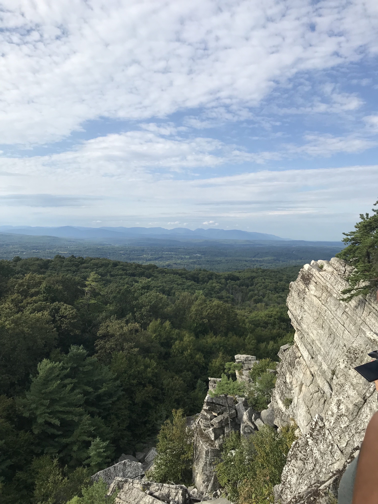

This photo was taken on September 1st, 2019 towards the top of the Bonticou Crag trail here in the New Paltz. This area can be accessed through the Spring Farm Road parking lot of the Mohonk Preserve. This photo depicts a great view of the Catskill mountains.

Taken on November 21st, 2020 this photo was taken in Montauk of eastern Long Island. This image depicts the scenic bluff near the eastern shoreline near Montauk Point. This location is off a trail in Camp Hero State Park.

I took this on March 8th, 2021 in my hometown of Smithtown Long Island. This area is located at Long Beach in the village of Nissequogue. A beautiful sunset view of the Long Island sound and if you look closely you can see the Northport power station smoke stacks far in the distance.

June 17th, 2021. This photos shows a stunning view of the White Mountains in Lincoln, New Hampshire. Part of the Pemigewasset loop this is a view point from Mount Lafayette which sits at about 5260 feet of elevation. This grueling 32 mile loop took multiple days of backpacking and is still the most difficult hikes ive ever been on.